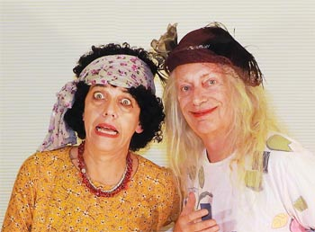
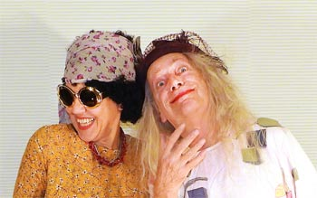
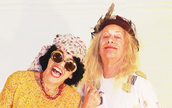
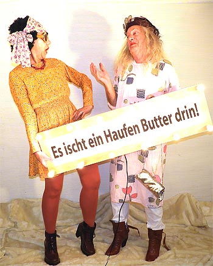
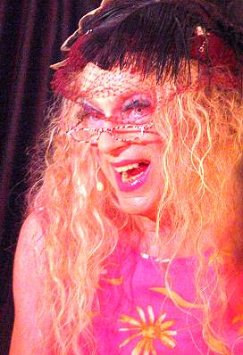
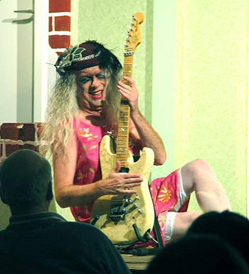
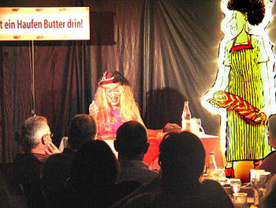
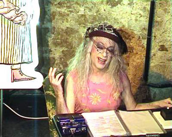
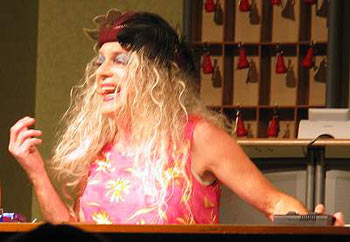

Musik-Video
Die Live-Show
Schwäbische Comedy pur! Das Original.
Frau Kächele & Frau Peters auf der Bühne – mit Babs Steinbock und Teflon Fonfara.
Anfrage per Mail
Der aktuelle Song
Das Bühnenprogramm
2019 kommen Frau Kächele & Frau Peters wieder auf die Bühne mit einer neuen schrillen schwäbischen Performance.
Gespielt werden Szenen wie „Das Kehrwochenfrühwarnsystem“ oder „Der Busenlift“ und andere Originaltexte aus der SDR-Kultserie.
Dazwischen gibt es Songs mit hohem Unterhaltungswert zur Kehrwoche, zur Liebe und zum Hefezopf, und der berühmte Song von Drafi Deutscher heißt jetzt „Marmorkuchen immer bricht, aber unser Hefezopf nicht“!
Anfragen für Liveauftritte an teflon@fonfara.de
Das aktuelle Video
Video
Die Orgasmusschaukel
Landesschau SWR vom 25.10.2019
TV
Teflon Fonfara in SWR Landesschau




Rückschau: Fotos von der Show 2008
Frau Kächele & Frau Peters – die One-Man-Show.




